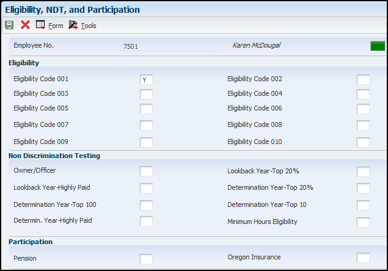

This document provides general information regarding setting up the payroll information for an employee who will be paid through JD Edwards EnterpriseOne payroll. This document includes information on topics such as: Payroll Revisions, Labor Distribution, Employee DBA Instructions, Additional Tax Overrides and Employee Setup for Auto Deposit. For additional information on adding a new US Employee in the Employee Information application (P0801), refer to document Overview of Adding US Employees.
Scope
This document is intended for EnterpriseOne users who are setting up the Human Resources and Payroll modules for use within their organization.
Details
Overview of Payroll Related Employee Information Entry
When using the JD Edwards Payroll Module, it is necessary to complete specific Payroll Information for the employees. This document provides an overview of the applications and forms used to enter this payroll information. For additional information on adding the basic information for new US employees in the Employee Information application (P0801) refer to Document Overview of Adding US Employees.
The payroll related forms within the JD Edwards EnterpriseOne Human Capital Management Foundation system are used to track detailed information about your employees. The information is used by the system to determine work schedules, special time entry conditions, benefits eligibility as well as deductions assigned to specific employees. The information also determines how the employee receives their payroll payment.
Entering Payroll Information for Employees
This section provides an overview of payroll information entry for employees and lists a prerequisite. You must enter payroll information for employees before you can process a payroll for them. You enter payroll data to identify information that the system needs in order to calculate an employee's pay. This information includes:
Geographic information
Labor distribution information
Wage attachment payees
Pay cycle code
Note:
When you use the Employee Payroll Revisions program (P0801PRL) to update the employee master values for labor distribution period ID or total time accounting rules in table F08042, the system also updates the respective values in the Employee Transaction Detail File table (F06116).
If you are upgrading to JD Edwards EnterpriseOne release 9.0 or later, run the Add Records to F06041, F08041 Report (R05041) before you enter payroll information for employees for the first time. You must run this report as part of the post-install instructions for release 9.0. This report updates the Specify Future Data Fields table (F06041) for future data changes and the Select Data Items for History table (F08041) for history tracking with the new fields for Labor Distribution Period ID (LDID) and Total Time Accounting Rules (TTAR).
Employee Payroll Revisions (P0801PRL)
From the Employee Information application (P0801), select an employee record on the Work With Employee Information form and then select Payroll from the Row menu. Enter applicable payroll information for the employee.
Employee No. - The employee number, tax ID, or alternate number, depending on the employee number mode that is set up in the Payroll Constants (Company Options - (P05001C)) for company 00000 will be displayed for the employee you have selected.
Pay Cycle Code - Enter a code that identifies the values for a master payroll cycle.
Employee Classification Status- Enter an employee classification that determines the type of employee to the system. It identifies them as an independent contractor, a regular employee, or a step progression employee. Values are:
Y: Independent Contractor
N: Regular Employee
S: Employee using Step Progression
Work Schedule - Enter a user-defined code to designate intra-pay period work schedules. This code can be used for reporting and to select employees to be included in a payroll run. For example:
A: Monday through Friday
B: Saturday through Wednesday
C: Monday through Thursday (4 × 10 hours)
Record Type - Enter a code that identifies whether the employee is to be handled through recharge processing for the Payroll Journal Entry program. Values are:
1: Payroll Processing Only
2: Payroll and Recharge Processing
3: Recharge Processing Only After a timecard has been added, you cannot change its record type.
Pre-Note Code - Enter a code that lets you test the deposit instructions for one pay period before actually processing a deposit. Adding an employee to this form automatically activates this person in the automated deposit system. The system assigns a pre-note code to this employee in the next applicable payroll run to test the automatic deposit instructions you set up before actually depositing a check. In the pre-note test, the system creates a zero-dollar entry for this employee and sends it to the employee's bank account. In addition, the employee receives a check for this amount. After the test, the system changes this field to N. To repeat this test, enter P in this field. If you leave this field blank, the system uses the default value of P. If you change an employee's automatic deposit instructions, the system creates a pre-note. If you do not want a pre-note, you must change the value in the Pre-note Code field to N.
Wage Attachment Payee - Enter the address book number for the supplier who receives the final payment. In benefits administration, this is the address book number of the company that issues the plan and receives premium payments for it. For wage attachments, the payee is the address book number of the agency, company, individual, or court that is to receive the payment of the check.
Vacation Factor - Enter a value in this field to represent the number of pay periods that this check is to cover. The JD Edwards EnterpriseOne Payroll system uses this value to direct the Vertex payroll tax program to treat the pay as a vacation advance. The computed taxes are automatically averaged over the number of pay periods. See the Vertex system manual for an explanation of the method of calculating tax on vacation advances.
Max/Min Net Pay (maximum/minimum net pay) - Enter the lowest amount to be generated as a check, bank advice, or payslip. The system does not allow zero amount checks if you have specified a minimum check amount. You can leave this field blank. Generally, the value in this field specifies the minimum amount that must be paid to the employee.
Labor Distribution Method- Enter a value that controls whether the labor costs include a flat burden for payroll taxes and benefits. Values are:
0: The flat burden factor is always 1.0000, so the resulting amount for the flat burden is zero.
1: The flat burden factor is always greater than 1.0000, so the labor costs include a flat burden.
Labor Distribution Multiplier - Enter a multiplier to load direct labor costs with burden. For example, a factor of 1.32 would load every dollar of labor cost with 32 cents worth of burden.
Distribution Rate - Enter a number that specifies the rate that the system uses to bill for labor services. This rate is often referred to as the billing or recharge rate. The system charges the resulting amount, based on this rate, to the primary distribution account for the timecard. The system also enters an offset to an account that is derived from automatic accounting instructions. This rate does not affect employee payroll. To allow billing rates in time entry, you must enter a value of 2 (payroll and recharge processing) or 3 (recharge processing only) in the Record Type field on the Employee Payroll Revisions form.
Pay Cycle Bypass Count - Enter the number of pay cycles (paychecks) that the system bypasses. You normally specify this number during the interim check process for short term absences such as vacations and jury duty. The system prints a normal paycheck for an employee only when this number is zero.
Labor Distribution Period ID - Enter a value from user-defined code (UDC) table 05T/LD that identifies the labor distribution period. If you leave this field blank, no labor distribution period is specified for the employee. When you update the value in this field, the system also updates the LDID value in the F06116 table.
Not Subject to TTA Rules - Select an option from the drop-down menu to specify whether timecards for employees are subject to total time accounting (TTA) rules. These options are values from UDC table 05T/TA. When you change the total time accounting rules for an existing employee who has timecard records, the system also updates the timecard in the F06116 table. For example, if you already created a timecard with the TTAR value set to Not Subject to TTA Rules, the TTAR value in the F06116 table would be 0. Now, if you update the TTAR field to Subject to Hourly Rate TTA Rules, the system will update the TTAR value of timecard in the F06116 table to 1. This value indicates that you should process the timecard through TTA rules. For additional information on TTA Rules refer to document 1259485.1.
Date of Last Raise - Enter the date of the employee's last raise. For the E-mail HR system, this is the date when you update salary and wages. If you also use the Payroll module, this date is automatically updated when a payroll is run. You define pay-effective dates using the Pay Rate Information form.
Date of Next Raise - Enter the date that the hourly or annual pay rate for the employee increases. The new rate goes into effect after a payroll cycle finishes with a pay period end date on or after the date of the next raise.
Business Unit – Last Worked - Enter the last business unit (job) number associated with this employee. This field is used for distribution of paychecks and in the generation of journal entries. When you process a payroll cycle that includes the employee, the system automatically updates this field.
Date of Last Check - Enter the date of the last payroll check issued to the employee. The system automatically updates this field when you run a payroll. If you leave this field blank, the system uses the check date as the default.
Home State - Enter the employee's home state for tax reporting purposes. This code designates the state in which the employee resides.
Note: For W-2 reporting, use the numeric equivalent of the designated state. For example: 06 - Colorado, 05 - California. Otherwise, the system produces undesirable report results. If you leave this field blank, the system uses the value in the Tax Area (Resident) field on the Pay and Tax Information form as the employee's resident (base) state.
Home City - Enter the location or city where the employee resides.
Work State - Enter the employee's work state for tax reporting purposes. This code indicates the state in which the employee normally works. The system uses this code to compute state income tax withholding. You can override this code during time entry, if necessary.
Work City - Enter the employee's work city for tax reporting purposes. This code indicates the city in which the employee normally works.
Work County - Enter the employee's work county for tax reporting purposes. This code indicates the country in which the employee normally works.
Eligibility, NDT, and Participation (P0801ELI) Information
To track additional eligibility information that is specific to your organization, you can enter eligibility codes. Eligibility codes are one-digit codes that you can use to track any type of additional eligibility information that your organization needs. If your organization offers retirement pension plans as part of its employee benefit package, the government in some countries requires that you perform nondiscrimination testing. You use nondiscrimination testing to demonstrate that your organization's highly compensated employees do not take unfair advantage of retirement pension contributions. To specify whether employees are participating in certain benefit plans, you enter participation information. You must setup eligibility codes in UDC 05/YB.
From the Employee Information application (P0801), select an employee record and then select Eligibility/NDT from the Row menu. Enter applicable information for the employee.

Employee No. -The employee number, tax ID, or alternate number, depending on the employee number mode that is set up in the Payroll Constants for company 00000 will be displayed for the employee you have selected
Eligibility Code (001-010)- Enter a code to specify an employee's eligibility for or participation in various user-defined plans or programs. For example, these codes can be used to designate:
Note: Non Discrimination Testing (NDT) is discussed in document 629029.1.
Pension - Enter a code that specifies whether the employee is eligible to participate in the company's retirement plan.
Note: When you process W-2 information for employees, the code that you enter in the Pension field determines whether the system places an X, indicating employee eligibility, in the Retirement plan box of the employee's W-2 form.
Oregon Insurance - Enter a code to specify whether an employee is participating in the Oregon Industrial Insurance program. The Oregon SUI continuation report reads this field to determine what value should be entered in the appropriate box on the tax return.
Labor Distribution Instructions (P050151)
You enter labor distribution instructions for individual employees to automate the process of distributing an employee's work time to multiple general ledger accounts. You can enter labor distribution instructions for hourly and salaried employees. Labor distribution instructions simplify time entry. If you enter distribution instructions for an employee who is not set up for autopay, you can obtain the instructions when you enter timecards manually. The system uses the labor distribution instructions that you enter when it creates timecards for autopay employees.
You use labor distribution instructions to:
Distribute time to multiple general ledger accounts.
Distribute time by either percentage or number of hours.
Set effective dates for distributions.
Create a template for time entry.
Define job type information when the employee has more than one job.
Override position ID and AAI accounts for an employee.
These examples are practical applications of labor distribution instructions:
If an employee always spends 80 percent of the time processing payroll and 20 percent managing other staff, then you can allocate the time 80 percent to G/L account Regular Pay and 20 percent to G/L account Regular Pay-Managers using labor distribution instructions.
If an employee spends five hours per week performing administrative duties and 35 hours performing regular salaried duties, you can allocate the amount to two different G/L accounts.
If you are entering a batch of timecards for employees whose time needs to be allocated identically, you can assign labor distribution instructions to one employee in the batch and then copy the instructions to all of the other employees in the batch. An example of this would be a hospital setting where a group of general nurses works on a unit part of the time and also works in the HR Department in Occupational Health evaluating employee on-the-job injuries the rest of the time.
When an employee works for a business unit or company other than the home company, you can override the position ID so that budget allocations reflect the position ID of the business unit or company where the employee performed work. This feature is useful in the public sector and in organizations in which budget tracking by position is critical to maintain or justify the appropriate workforce.
In the previous examples, you can specify the start and stop dates of the instructions. These dates control when the labor distribution instructions can be used. If you entered a timecard on a different date, the instructions would not apply, and you could not copy them in time entry.
Setting Processing Options for Labor Distribution Instructions (P050151)
Defaults Tab - This processing option specifies how the system determines the appropriate source for the Worker's Compensation Code.
1. Worker's Compensation Code - Specify the default Worker's Compensation Code for Employee Labor Distribution. Values are:
1: The Worker's Compensation Code comes from the Employee Master table regardless of the Employee Labor Distribution entry.
2: The Worker's Compensation Code comes from the Employee Master table only if the Employee Labor Distribution field is blank.
3: The Worker's Compensation Code comes from the Data Dictionary only if the Employee Labor Distribution field is blank. (Default)
Entering Labor Distribution Instructions
From the Employee Information application (P0801), select an employee record and then select Labor Distribution from the Row menu. Enter applicable information for the employee.
Employee No - Enter the employee number, tax ID, or alternate number, depending on the employee number mode that is set up in the Payroll Constants for company 00000.
Percent or Hours- Enter a value that specifies how the system creates or applies labor distribution employee time. Values are:
H: Adds a specified number of hours to the employee time. For example, if you want to charge 20 hours of employee time in every pay period to a specified account, you enter 20 in the Hours/Percent field.
%: Apportions the total hours entered to specified accounts based on the percentages entered in the hours/percent field. For example, if you always want 30 percent of employee time charged to a specified account, and the remaining 70 percent of the time to a different account, you enter in 30 in the hours/percent field in the first row, and 70 in the hours/percent field in the second row. The totals must equal 100 percent.
Pay Code - Enter a code that defines the type of pay, deduction, benefit, or accrual. Pay types are numbered from 1 to 999. Deductions and benefits are numbered from 1000 to 9999.
Hours/ Percent - Enter the number of hours associated with each transaction, or the percentage of hours associated with each transaction.
Account Number - Enter a value that identifies an account in the general ledger. Use one of these formats to enter account numbers:
Standard account number (business unit.object.subsidiary or flex format)
Third G/L number (maximum of 25 digits)
Account ID number (8 digits)
Speed code, which is a two-character code that you concatenate to the AAI item SP. You can then enter the code instead of an account number.
The first character of the account number indicates its format. You define the account format in the General Accounting Constants (P0000).
Pay Start Date - Enter the date that an employee may begin participating in the company's benefit plans or may be included in payroll processing.
Pay Stop Date - Enter the date when an employee should no longer be included in a payroll cycle or the date when an employee stops participating in the company's benefit plans.Note:
Note: You can use the Pay Start Date and Pay Stop Date fields only if the method you are using is based on hours. You can set a range of pay period ending dates during which a particular labor distribution instruction is effective. Leave these fields blank for any standard, continuous distribution instructions.
WCI Code - Enter a code from UDC 00/W that represents a workers' compensation insurance (WCI) code. This code should correspond to the classifications on your periodic workers' compensation insurance reports.
WCI Class - Enter a code that specifies any special circumstances associated with the workers compensation insurance (WCI) code, resulting in multiple rates for the same WCI code due to location or risk. The subclass should remain blank if multiple rates do not exist. Default codes are:
Blank: There are no special circumstances.
F: There are special circumstances.
Hourly Rate - Enter the employee's hourly rate, which is retrieved during time entry. If you enter a rate in this field on any other form, that rate can override the value in the Employee Master table. In the Employee Master table, this number is the employee's base hourly rate. In the Union Rates table, it is the straight time rate.
Note: If you change the number of the data display decimal digits for this field, you must also change the Rate - Base Hourly (BHRT) and Rate - Hourly (SHRT) fields so that they have exactly the same number of data display decimal digits.
Billing Rate - Enter a number that specifies the rate that the system uses to bill for labor services. This rate is often referred to as the billing or recharge rate. The system charges the resulting amount, based on this rate, to the primary distribution account for the timecard. The system also enters an offset to an account that is derived from automatic accounting instructions. This rate does not affect employee payroll. To allow billing rates in time entry, the employee record type must be set to 2 (payroll and recharge processing) or 3 (recharge processing only) with the Employee Payroll program (P0801PRL).
Burden Rate - Enter an hourly rate to be used when charging burden associated with the actual billing (recharge) amounts.
Note: Default values will populate the other fields on this form if populated on various other employee information forms.
Split Time
In addition to labor distribution instructions, a Split Time feature is available that automatically allocates time entry charges to various accounts during time entry. Split Time is activated in the processing options for the Time Entry MBF Processing Options program (P050002A). When the Split Time feature is activated, it sets up a hierarchy for the system to search to find the appropriate account number as follows:
The system first searches for labor distribution instructions at the employee level. If it finds them, it retrieves the percentage or number of hours set up, as well as the account number assigned to each amount. If the labor distribution instructions are using the hours method instead of the percentage method, the system prorates the hours to determine the amount of the split. The system applies these amounts to all pay types entered on the Time Entry Revisions form regardless of the pay type set up in the labor distribution instructions.
If no labor distribution instructions are set up, the system searches the Position Control specifications and selects the allocation, if any.
If no labor distribution instructions are set up and no account allocations are defined in the Employee Master program (P0801) specifications, the system proceeds to the automatic accounting instructions and uses the account information defined there.
The Split Time feature was designed for clients who want to avoid setting up numerous automatic accounting instructions. It is intended for those employees who typically charge their time to more than one area. All pay types are split according to the instructions that the system finds. Split Time and labor distribution instructions were not designed to work together. When Split Time is activated, the system includes labor distributions in the hierarchy when searching for the account numbers used to allocate labor charges. When Split Time is not activated, the labor distribution instructions must be manually copied during time entry for non-autopay employees. When Split Time is activated and the employee also has labor distribution instructions, every pay type entered on the timecard is split according to the labor distribution instructions that are set up for the employee. Therefore, if pay type 1 is set up to be split between two accounts on the labor distribution instructions, then the time is split between the accounts selected on labor distribution instructions.
For any pay code entered (including pay code 1) on the Time Entry Revisions form, the system supplies the hours and account number from the labor distribution instructions. The system does not supply the pay code or change the pay code that was entered. When time is entered you must copy the labor distribution instructions for the employee if the Split Time processing option is not activated. The time is then allocated according to the labor distribution instructions. Only the pay type set up on the labor distribution instructions is allocated on the Time Entry Revisions form.
These are suggestions for using the Labor Distribution instructions and the Split Time feature:
Use Split Time when you want to split every pay code according to either labor distribution instructions or position control.
Enter a batch of timecards with the Split Time feature activated, and then deactivate Split Time and enter additional timecards
Employee Deduction, Benefit, and Accrual Instructions (P050181)
After you set up deductions, benefits, and accruals (DBAs), you enter DBA instructions to assign DBAs to employees. You can enter DBAs at these levels:
One-time DBA override.
Employee DBA instructions
Group/Benefit Plan DBAs
DBA setup
This document only discusses how and why to enter DBAs at the employee level. You enter DBA instructions at the employee level to define and maintain DBAs unique to an individual employee. A DBA assigned at the employee level overrides DBA amounts or rates that are defined at the group or DBA setup level, unless the DBA is a table method DBA. During the payroll-cycle processing, the system first calculates one-time DBA overrides. If there are no DBA overrides, then the system searches for DBAs that apply to the individual employee or employee groups. If no employee-specific DBAs or group plan DBAs exist, the system calculates any general DBAs.
The information that you enter with the Employee DBA Instructions program (P050181) represents the third level of DBA assignment, the employee level. When you assign DBA instructions at the employee level, you can specify:
Exceptions by employee for a group of DBAs
Overrides for DBA amounts, dates, and limitations
Start and stop dates for a DBA
DBAs to calculate only when an employee works in a specified assignment
Setting Processing Options for Employee DBA Instructions (P050181)
Benefits Admin Tab
Enter a '1' to allow changes or deletions on the DBA instructions screen for DBA's that are attached to benefit plans/options. A Blank means changes or deletions may only be initiated through the Benefits Administration menu (G08BB - Daily Processing).
Entering/Reviewing Employee Deduction, Benefit, and Accrual Instructions
From the Employee Information application (P0801), select the employee record to be reviewed/updated. If only a review is necessary, select the EE DBA Review from the Row menu. If additions or changes are necessary, select the Employee DBA Inst. from the Row menu.
Employee Identification - The employee number, tax ID, or alternate number, depending on the employee number mode that is set up in the Payroll Constants for company 00000 will be displayed.
Effective On - Enter a future date when all changes will take effect or the date when the changes went into effect. If you do not enter a date in this field, the system uses the current date as the effective date.
Union Code - Will default in, if applicable.
Job Type/Step - Will default in, if applicable.
Cleared Items- Enter a value that specifies whether cleared deductions appear on the form. To display cleared items, select the Cleared Items option. The system categorizes deductions as cleared when:
The through date of the deduction is older than the system date.
The Declining Balance flag for the deduction is turned on and the amount due is 0.
The Use Number of Periods flag is turned on and the number of periods is 0.
PDBA Code - Enter a code that defines the type of pay, deduction, benefit, or accrual. Pay types are numbered from 1 to 999. Deductions and benefits are numbered from 1000 to 9999.
DBA Type - A code that specifies the type of payroll entry. Will default in from the PDBA code selected. Values are:
P: Time Cards (earnings).
D: Deductions withheld.
B: Benefit (both cash and noncash).
A: Time accrual, such as sick and vacation time. These values are hard-coded.
Calc Method and Description - Will default in from the PDBA code that is entered.
Assignment Number - Enter a number that identifies a task that is used for resource scheduling. The task number is generated by the system. If you want a DBA to calculate only when an employee works in a specified assignment, you enter an assignment number for that DBA here. When calculating the DBA, the system uses all timecards associated with that assignment as the basis of calculation for the DBA.
Override Flag - Enter Yes or No, indicating whether the system treats the Amount/Rate field as a zero amount override. You use this field primarily when an employee is part of a group plan yet does not receive a particular benefit in that plan.
Amt/Rt Level 1 - Enter a value that specifies a percentage, a monetary amount, or an hourly rate, depending on where it is used. Values are:
1: For a deduction, benefit, or accrual, the meaning of this value depends on the method of calculation. The method determines whether the deduction is a flat monetary amount, a percentage, or a multiplication rate. Table method DBAs, depending on which table method they use, can either use this amount in the calculation or ignore it. If there are exceptions to the table calculation, you can override the table code in the detail area, set up a flat monetary DBA amount, or override the amount with a one-time override for a timecard.
2: For a pay type, amounts entered in this field override the hourly rate.
Amt/Rt Level 2 (not shown in screenshot) - Enter the second amount or rate associated with a deduction, benefit, or accrual. Because many DBA types require multiple tiers, two levels of Amount (Rate) exist. The system uses the first level, Amount (Rate) 1, until the annual limit is reached. Then, the second level, Amount (Rate) 2, begins the next time the employee is paid. Amount (Rate) 2 continues until the second annual limit is reached. This field works in conjunction with the annual limit fields. The rate you enter in this field supersedes any other table rate for an employee, except for one-time overrides during time entry.
Pay Start Date - Enter the date an instruction starts, for example, the date the system should start a deduction. The start date must be less than or equal to the timecard date. To start a DBA at the beginning of a pay cycle, make the start date equal to the first day of the pay cycle. For example, if the pay cycle runs from October 1 to October 15, start the DBA on October 1. If both the start and stop dates are within the pay period from and through dates, even if the stop date is not less than the timecard date, the system does not calculate the DBA. For a flat amount DBA, the system calculates the full DBA for any timecard that falls within the DBA start and stop dates. For DBAs that calculate from a basis amount, such as a percentage rate DBA, the system includes only those timecards that fall within the DBA start and stop dates in the basis of calculation.
Pay Stop Date - Enter the date an instruction stops, for example, the date the system should stop a deduction. The stop date must be less than the timecard date. To stop a DBA before the next pay cycle, make the stop date one day prior to the first day of the next pay cycle. For example, if the pay cycle runs from October 1 through October 15, set the DBA stop date as September 30. If both the start and stop dates are within the pay period from and through dates, even if the stop date is not less than the timecard date, the system does not calculate the DBA. For a flat amount DBA, the system calculates the full DBA for any timecard that falls within the DBA start and stop dates. For DBAs that calculate from a basis amount, such as a percentage rate DBA, the system includes only those timecards that fall within the DBA start and stop dates in the basis of calculation.
Voucher Flag- Enter a code used to determine whether the system should generate a voucher for the DBA, tax, or wage attachment during the final update phase of the payroll processing cycle. Values are:
N: No
Y: Yes
Payee - Enter the address book number for the supplier who receives the final payment. For benefits, this is the address book number of the company that issues the plan and receives premium payments for it. For wage attachments, payee is the address book number of the agency, company, individual, or court that is to receive the payment of the check.
Group Code - Enter a code that is common to all deduction or benefits that share the same limitations, such as pay period currency amount, percentage, monthly, and annual. The system takes these limits from the first deduction encountered in the group and withholds for all deductions until the limit is reached for the aggregate. Example:
Deduction 6400, Group A, Annual Limit = 1000 USD, No Pay Period Limit Deduction 6430, Group A, No Annual or Pay Period Limit Deduction 7700, Group A, No Annual or Pay Period Limit Deduction 9400, Group B, No Annual or Pay Period Limit Deduction 7550, Group B, No Annual Limit, Pay Period Limit = 50 USD
For this example, the system determines the deductions that are assigned to Group A, and applies a 1000 USD annual limit for all three deductions. The system continues to take the deductions from an employee's paycheck until a total of 1000 USD has been deducted between all entities in Group A for the year. For deductions in Group B, the system deducts no more than 50 USD per pay period between for the two deductions.
Table Code - Enter the table that the system should use if the calculation requires table values.
Amount Due - Enter the balance or amount due for the DBA.
Prior DBA - Enter a code that identifies another DBA whose limit must be met first before this DBA calculates. For example; deduction 1400 has an annual limit of 2,000.00 USD. After this limit is met, deduction 1500 begins calculation and withholding. The DBA number of the predecessor must be lower than the successor's number.
Ded Per 1 (same for Ded Per 2-6 not shown in screenshot) - Enter a code designating the pay period in which the system calculates the DBA/auto deposit. Values are:
Y: Take the DBA/auto deposit during the current period.
N: Do not take the DBA/auto deposit during the current period.
*: Take the DBA/auto deposit only during the first pay period of each month that the employee works based on the ending date of this month's pay period.
Blank: Continue to look for a code at the lower level. The system searches for DBA rules first at the employee level, then at the group level, and finally at the DBA master level (see illustration above). If the field is blank at all levels, the system does not calculate the DBA in that period.
M: Applies only to benefits based on gross hours or dollars. An M in the fifth field tells the system to calculate the benefit only during the special timecard post. An M implies a Yes for a weekly withholding frequency. Some organizations may have the need to process a sixth, or special, payroll during a month.
Union Code, Job Type and Job Step - Will default in, if applicable.
Nbr Per (not shown in screenshot) - Enter the number of periods for which a deduction or benefit should be taken. The system automatically decreases this number by one for each period taken. You must enter a value in this field if you automate the Number of Periods field.
Limit $ Pay Period - Enter the maximum amount that can be withheld or accrued in a pay period for a deduction or a benefit. This amount is expressed in dollars. This amount refers to the gross pay/amount field.
Limit Monthly - Enter the maximum amount that can be withheld or accrued in a month for a deduction or a benefit. This amount is expressed in dollars. This amount refers to the gross pay/amount field.
Limit $ Quarterly - Enter the maximum amount that can be withheld or accrued in a quarter for a deduction or benefit. This amount is expressed in dollars. This amount refers to the gross pay/amount field.
Limit $ A/L1- Enter the maximum amount that can be withheld or accrued in a year for a deduction or a benefit. This amount is expressed in dollars. This amount refers to the gross pay/amount field. This field can represent either an initial annual limitation or a final limitation in a year:
The amount in the Limit $ A/L1 field represents the first level of the yearly limitation.
The value in the Limit $ A/L2 field represents the final limitation.
If an annual limit is specified on a DBA calculation table, the annual limit from the table takes precedence over annual limits defined at the master DBA or employee levels.
Limit $ A/L2 (not shown in screenshot) - Enter the maximum amount that can be withheld or accrued in a year for a deduction or a benefit. This amount is expressed in dollars. This amount refers to the gross pay/amount field.
Note: This field represents the second level annual limitation. It is used when there is an initial limitation and a corresponding rate, which is followed up by a new rate and a final limitation. This field cannot be used independently. There must always be a value in the Limit $ A/L1 field if you specify a value in the Limit $ A/L2 field.
ITD Limit - Enter the maximum amount of dollars or hours that an accrual can have at any one time.
Limit % Period - Enter the maximum percentage of pay that the calculated deduction or benefit amount may not exceed. This percentage works in conjunction with the dollar limits of the deduction or benefit, so whichever limit is reached first stops the calculation. For accrual transactions, this field represents an hour's limit.
Rate Control- Enter a value that defines the date that is effective for the PDBA. The system uses this field to control the rate that it uses to calculate a DBA when multiple rates are valid within the pay cycle. During payroll and interim processes, this value determines whether the system uses the ending rate, beginning rate, or prorates all rates it finds within a pay cycle period. Values are:
1: Use the rate that is valid at the end of the pay period.
2: Use the rate that is valid at the beginning of the pay period.
3: Prorate the DBA calculation using all rates.
Deleting a DBA Instruction
When you need to remove a DBA instruction from an employee record, use caution to avoid deleting a DBA that has already accumulated history information. After a DBA has been active and amounts have been withheld from an employee's compensation, removing the DBA could result in errors on year-end forms. When deleting a DBA instruction, if the DBA has history information, the system displays a warning message indicating that history information exists. If you receive this message, cancel the deletion procedure. See processing options (above) for deleting a DBA attached to a benefit plan and/or group.
Automatic Deposit Instructions
Automatic deposit instructions are entered for any employee who wants all or part of each payment deposited directly in a bank account. When you enter automatic deposit instructions, the system creates a prenote record that is sent to the bank for verification. The prenote information can be created during the first payroll cycle in which the employee is processed after the automatic deposit instructions are entered into the system, or you can create prenote transactions outside of the payroll cycle. Using automatic deposit instructions, you can:
Set up a combination of automatic deposit, check, or cash payments.
Set up multiple bank accounts for an employee.
Start and stop automatic deposits by period.
Start and stop automatic deposits by date.
Set up a remainder code to automatically process any money remaining when an employee chooses different ways to distribute a payment.
Setting Processing Options for Auto Deposit Instructions (P055011)
Bank Info Tab - These processing options specify information codes and formatting that is required so that financial institutions can exchange automatic deposit information accurately.
1. Originating Financial Organization No. - Enter the transit routing number used to identify the financial organization to which the deposit tape is being sent for processing. Obtain this code from the bank at which your company's payroll account is maintained. This bank serves as a clearing house for your employees' automatic deposits. Using the Individuals Financial Organization No (IFO#) and Financial Organization Account Number (FOA#), this bank will route (through electronic funds transfers (EFT)) each employee's deposit to his own account at his own financial institution. 2. Service Class Code - Enter a code to identify the general classification of dollar entries to be exchanged. This standard is used to facilitate transmission of data between organizations. Automated Clearing House (ACH) entries required for payroll deposits use the following service class codes:
200: ACH entries mixed debit and credits
220: ACH credits only (batch format)
225: ACH debits only (batch format).
Note: Currently only the use of class 200 is recommended.
3. Standard Entry Class - Enter a code to distinguish the various kinds of paperless entries. The following entry classes have been defined:
SIA: Single item authorization
PPD: Pre-arranged payments and deposits.
Note: Currently only PPD is recommended for the entry class.
4. Off Set Begin Deposit Date - Specify whether to use a default for the begin deposit date.
0: Do not default the Begin Deposit Date.
1: Default the Begin Deposit Date.
5. Off Set Begin Deposit Date - Specify the number of offset days that the system uses for the pay start date. When you enter 0 or leave this field blank, the system uses the current date. When you enter a value of 1 or greater, the system uses the current date plus that value. This feature works only when the effective deposit date follows the MMDDYY format, which is required by ACH. Values are:
0 or Blank: The system uses the current date.
X (a value of 1 or greater): The system uses the current date plus the number of days specified.
Entering Automatic Deposit Instructions
From the Employee Information application (P0801), select an employee record and then select Auto Deposit from the Row menu. Various combinations of auto deposit instructions can be entered on this form. For example, an employee can have his wages deposited into multiple bank accounts at multiple banks and still receive a check for any remaining balance.
Employee No. - The employee number, tax ID, or alternate number, depending on the employee number mode that is set up in the Payroll Constants for company 00000
Home Company and Home Business Unit - Will auto-populate.
Pre-Note Flag - Enter a code to indicate whether you want to test the deposit instructions for one pay period before actually processing a deposit. Adding an employee to the Automatic Bank Deposit Instructions form automatically activates this person in the automated deposit system. The system prenotes this employee in the next applicable payroll run to test the auto deposit instructions you have set up before actually depositing a check. In the prenote test, the system creates a no-dollar entry for this employee and sends it to the employee's bank account. In addition, the employee receives a check for this amount. After the test, the system changes this field to N. To repeat this test, enter P in this field. If you leave this field blank, the system uses the default value of P. If you change an employee's automatic deposit instructions, the system creates a prenote. If you do not want a prenote, you must change the value in the Prenote Flag field to N.
Pay Start Date - Enter the date that an employee may begin participating in the company's benefit plans or may be included in payroll processing. You can also use this field to provide a beginning date for seasonal employees or for employees who work only part of the year (such as a teacher who works only nine months of the year).
Pay Stop Date - Enter the date when an employee should no longer be included in a payroll cycle or the date when an employee stops participating in the company's benefit plans. You can use this date for terminated employees, seasonal employees, or employees who work only part of the year (such as a teacher who works only nine months of the year). See also data item PSDT. This date may also be the date that a deduction, benefit, or accrual instruction stops.
Bank Account - Enter the employee's unique account number at the financial institution. The number is obtained from the MICR line of a voided check or a deposit slip from the employee's account . You must include dash cue symbols in the field . However, they are recorded in a translated mode as a hyphen (-). Account numbers can also be obtained from other sources, such as passbooks or debit cards. When transcribing information, left justify and enter only numbers (0 through 9),alphabetic (A through Z), and hyphens (-). If fewer than 17 characters are required, leave the unused spaces blank. Spaces left within the depositor's account number are ignored when the paperless entry is prepared. For example, 0123 4 56789 appears as 0123456789 in the entry record, and 0123-4 56789 appears as 0123-456789. If you change this number, the system automatically prenotes the employee's auto deposit record again.
Note: The Financial Organization Account Number (FOA#) is used as the company's unique bank account number rather than the employee's unique bank account number in these tables:
F06560 - Bank Reconciliation - Issue Table
F06561 - Bank Reconciliation - Paid Table
Bank/Gateway Operator Trnst No. - Enter the bank transit number for the employee's financial institution. Banks might refer to this number as the ABA or payment routing number. This number can be obtained from the employee's check or deposit slip. It is located between the MICR colons (:) at the bottom of the check. For U.S. banks, this number contains 9 digits. If this number does not contain nine digits, you must contact the employee's financial institution to obtain the correct number. If you change this number for an employee, the system creates a prenote for the employee's next auto deposit.
M C (method code) - Specify the method in which an employee can split up net pay. This code specifies the method(s) in which a segment is to be computed:
$: A specific amount is to be deposited.
%: A percentage of net pay is to be deposited.
C: A specific amount is to be generated as a payroll check.
P: A specific amount is to be generated as cash.
R: The remainder of the net pay, after percent and specific amount segments are processed, is to be deposited in the bank.
Q: The remainder of the net pay, after percent and specific amount segments are processed, is to be generated as cash.
D: The remainder of the net pay, after percent and specific amount segments are processed, is to be generated as a payroll check.
Note: A remainder record is required and only one method can be specified (R, Q, or D).
Tr Cd (transaction code) - Enter a code used to distinguish various types of bank accounts, for example, checking, savings, or credit union. Currently these codes have been assigned:
Demand account credits are:
20: Reserved
21: Credit entry to return automated deposit
22: Automated Deposit
Savings Account credits are:
30: Reserved
31: Credit entry to return automated deposit
32: Automated Deposit
Demand account debits are:
25: Reserved
26: Debit entry to return automated payment
27: Automated Payment
Savings account debits are:
35: Reserved
36: Debit entry to return automated payment
37: Automated Payment
Note: If you leave this field blank, the system uses the default value of 22.
Amount or Percent - Enter the actual gross pay amount for an employee. This amount is to be distinguished from the distributed gross pay amount used for labor distribution. See data item DPAY. When using Work Order Time Entry, this field is used to record miscellaneous pay for an employee, (for example, piece rate bonus).
F P (full/partial code)- Enter the code that applies only to method code $ (see BDM). If there is not enough net pay remaining to process the amount specified in the amount/percentage field, these values apply:
F: The full amount cannot be generated. The segment is ignored.
P: A partial amount can be generated for the bank and account specified for the segment. If you leave this field blank, the system uses F as the default value.
Ded Per 1 (deduction period 1)- Enter a code designating the pay period in which the system calculates the DBA/auto deposit. Values are:
Y: Take the DBA/auto deposit during the current period.
N: Do not take the DBA/auto deposit during the current period.
*: Take the DBA/auto deposit only during the first pay period of each month that the employee works based on the ending date of this month's pay period.
Blank: Continue to look for a code at the lower level. The system searches for DBA/auto deposit rules first at the employee level, then at the group level, and finally at the DBA master level. If the field is blank at all levels, the system does not calculate the DBA/auto deposit in that period.
M: Applies only to benefits based on gross hours or dollars. An M in the fifth field only tells the system to calculate the benefit during the special timecard post. An M implies a Yes for a weekly withholding frequency.
Note: Some organizations may have the need to process a sixth, or special, payroll during a month.
SEC- Enter a code that permits various kinds of paperless entries to be distinguished. These entry classes have been defined:
SIA: Single item authorization; and
PPD: Pre-arranged payments and deposits
IAT Destination Country Code - A user defined code list (00/CN) of two-character codes as approved by the International Organization of Standardization (ISO) used to identify the country in which the IAT payment entry is to be received.
Common Auto Deposit Issues and Errors
When attempting to add a new auto deposit to an employee, the following error may occur:
ERROR ----------------------- Not found in User Defined Code. An error ocurred in the grid on a hidden column, not found in the User Defined Code 06/BC. Due to this issue, users cannot add a new auto deposit records to employees.
This error will be given if the processing option: Originating financial Organization No. behind the P055011 is blank. Once the processing option is populated with the correct value, the error will not be given.
When attempting too add or change auto deposit information for an employee , the following error occurs:
ERROR
018A
Automatic Bank Deposit Instructions Problem with UDC in hidden field
Not found in User Defined Code
An error has occurred in the grid on a hidden column (that is, a column that you cannot view). Please contact your system administrator. not found in User Defined Code 06 SC
Error Details: Form P055011_W055011D Control Id 1 Control Title Grid (State Paid) Error ID 018A Please look for the highlighted fields, correct the entries, and resubmit your request.
This error will be given if the blank value has been removed from the UDC 06|SC. Re-populate the blank value into the UDC 06|SC table. Clear JDBj cache from Server Manager.
When attempting to add another auto deposit record in the P055011, the following error occurs.
ERROR ----------------------- Error: Not Found in User Defined Code 06|BC
This issue is caused by the Originating Bank field not being populated on the Bank Information Tab.
This field should be automatically populated by what is in the Originating Bank Field in the Processing Options behind the P055011 Delete the existing auto deposit records. Click on OK. Exit out of the P055011. Go back into the application. Enter the Auto Deposit record back in.
OR
SQL the Originating Bank Number in the F065016 table for all employees.
Additional Tax Overrides (P0701732)
Entering Additional Tax Overrides
After you have entered Tax Overrides (P060120) for an employee (refer to document Overview of Adding US Employees), you can use the Additional Tax Overrides form to enter employee-level Quantum tax overrides. This form can be used to track whether or not an employee has filed a Non-Resident Certificate when the work state differs from the resident state. For employees who live and or work in Arizona, the form also enables users to specify whether an Arizona Voluntary form is on file with the employer. Many states now require that employees file these forms in order to receive tax credit. The form also provides users with the ability to override the method that the system uses when calculating state and local taxes that are subject to jurisdictional interaction treatment (JIT), also known as reciprocity agreements. If a JIT override exists for an employee, this information is passed to Quantum each time a payment is calculated. The Quantum system determines if reciprocity rules for state withholding taxes should be overridden and calculates state and local taxes accordingly.
From the Employee Information application (P0801), select an employee record and then select Tax Overrides from the Row menu. From Tax Overrides, click on the Additional Overrides link in the header.
Address Number, Tax Area (Worked), and Tax Area (Res) - Will be default in from the Employee Master Table (F060116).
Tax Area - Enter the Tax Area for which you wish to enter the override.
Tax Type - Enter the Tax Type for which you wish to enter the override.
Override Tax Type- Enter a value to specify whether the value in the JIT Value, NR Certificate, or Arizona Voluntary field applies to the employee's resident or work state. For example, if you enter a record to override the JIT Value for the work state, enter W in this field. If you enter a value in this field, you must also enter a value in at least one of these fields:
JIT Value
NR Certificate
Arizona Voluntary
Note that you cannot enter a value in both the NR Certificate field and the Arizona Voluntary field in the same record. Values are:
R: Non-resident certificate (residence)
W: Non-resident certificate (work)
Begin Date - Enter the date the override begins.
End Date - Enter the date the override ends.
JIT Value (Jurisdictional Interaction Treatment Value) - Enter the JIT group that is associated with the tax calculation method that you want to use for the employee's pay scenario. The system uses this value to calculate the employee's taxable gross and tax amount for the resident and work states. The JIT value applies to state, city and county withholding. It does not apply to SUI or SDI. For assistance determining which value to enter for an employee, refer to the Quantum Tax Calculation Guide for State/Local Reciprocity, or contact your local taxing authority. Values are:
Resident Only:
2: Credit the resident tax by the amount of work tax withheld. Always accumulate wages.
3: Credit the resident tax by the amount of work tax withheld. Accumulate wages only if tax is withheld.
4: Eliminate the resident tax if the work tax is greater than zero. Always accumulate wages.
5: Eliminate the resident tax if the work tax is greater than zero. Accumulate wages only if tax is withheld.
6: Eliminate the resident tax if the work tax imposes a withholding tax on nonresidents. Always accumulate wages.
7: Eliminate the resident tax if the work tax imposes a withholding tax on nonresidents. Accumulate wages only if tax is withheld.
8: Calculate work taxes only.
Resident or Work:
-1: Bypass JIT tax calculation
0: Setting NR Certificate to FALSE. (For use with Vertex V.280 only)
1: Setting NR Certificate to TRUE. (For use with Vertex V.280 only)
99: Independent calculation. Calculate tax ignoring all state reciprocity rules.
NR Certificate (Non Resident Certificate)- Specify whether the employee has a non-resident certificate on file. If you enter a value in this field:
You cannot enter a value in the Arizona Voluntary field.
You must enter a value in the Override Tax Type field. Values are:
Blank or 0: The employee has not filed a certificate.
1: The employee has filed a certificate.
Arizona Voluntary (Non Resident Certificate)- Specify whether the employee has an Arizona Voluntary certificate on file. If you enter a value in this field:
You cannot enter a value in the NR Certificate field.
You must enter a value in the Override Tax Type field. Values are:
Blank or 0: The employee has not filed a certificate.
1: The employee has filed a certificate.
Indiana County WH- A code that determines whether an employee has filed the Indiana County WH-4 form. Values are:
T: True
F: False
Chi Head Tax Month 1 - Chi Head Month 3 - This indicator is evaluated to determine if:
The employee worked 50 percent or more of their hours in Chicago in month one (two, three) of the current quarter; or the employer had 50 or more full time employees in month one (two, three) of the current quarter. Valid values are:
T: True
F: False
The following fields have been designated as for future payroll use and do not display on the screenshot:
Rhode Island SUI Tier 2, Puerto Rico Exemption, Puerto Rico Joint Custody, Puerto Veteran, Puerto Rico Special Allowance, and Military Spouse Exempt
Overriding the JIT Value
Based on the value in the Jurisdiction Interaction Treatments processing option of the Payroll Workbench (P07210) and Interim Workbench (P07210I) programs, the system uses Jurisdictional Interaction Treatment (JIT) in this way:
If the value in the processing option is blank and a formal reciprocal agreement exists, the system assumes that the Nonresident Certificate has not been filed and calculates the work tax. The system passes the blank value of JIT into the Vertex tax engine for both work and resident states.
If the value in the processing option is blank, the system does not calculate work tax for nonresident employees working in a state with a formal reciprocation agreement with their state of residence. The system passes the value of JIT as 1 into the Vertex tax engine for both work and resident states.
By default, the system automatically calculates state taxes based on the JIT group to which the state belongs. For example, currently Vermont belongs to JIT group 2. Therefore, if no overrides exist, the Quantum system uses the method associated with JIT group 2 to calculate employee state taxes for Vermont. However, you might want to change the method that the system uses to calculate taxes for a certain employee and state. To change the calculation method, you enter an additional tax override for the employee. The override includes the state for which the override is applicable, the dates during which the override is valid, and the override JIT group.
For example, you might want Vermont taxes that are associated with a specific employee to calculate using the method for JIT group 3. Using this method, the system credits the resident tax by the amount of work tax withheld, and accumulates resident wages only if resident tax is withheld. To use this method, you must enter an override for the employee. This screenshot illustrates an example of the data that you might enter for this override:
The default JIT Value for Vermont is 2. However, in this example it has been overridden with a value of 3. Therefore, the employee's state taxes are calculated using the JIT group 3 method. If you process a payment for this employee that includes 2000 USD in gross pay, the records in the Tax Detail table (F07353) would include this information: